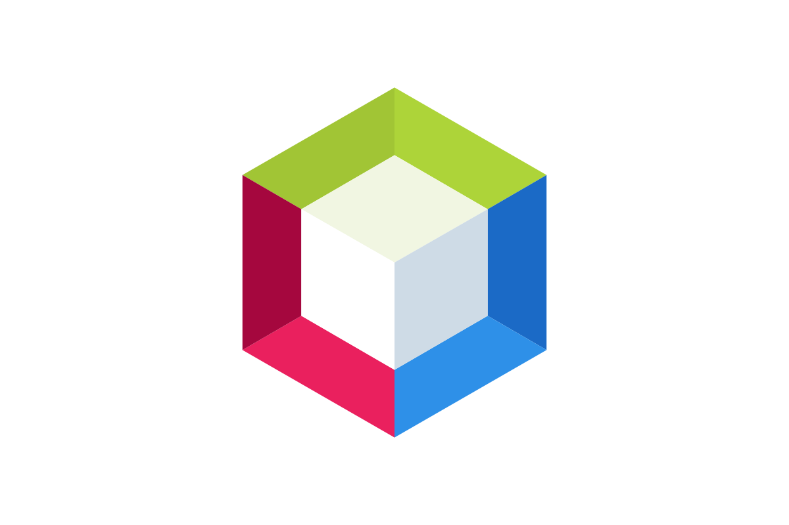

Le projet Odomo est une centrale domotique qui regroupe, une partie
information
météorologique,
une gestion du chauffage, mais également la gestion de l'irrigation d'un Jardin. Ce projet m'a
permis d'apprendre à maitriser les matrices qui sont indispensables dans la programmation,
l'importance des tests unitaires pour un programme mais également la gestion du temps et du travail
d'un projet sur le long terme.

Jeu de plateau
Biosphere7
Ce projet m'a permis de développer une compréhension des exigences
relatives à un logiciel. J'ai dû concevoir mon code de manière ordonnée et explicite,vu que
celui-ci a pour vocation d'être utilisé par d'autres développeurs. Au cours de la seconde phase de
ce projet, il était nécessaire de concevoir deux intelligences artificielles. En conséquence, j'ai
dû élaborer deux approches distinctes. Il était impératif de se baser sur des stratégies de jeux
de plateau.
Système
Machine virtuelle
Machine virtuelle
Le projet d'installation de poste, consiste à préparer un environnement prêt à
être utilisé par des développeurs de Go. Il a fallu installer et configurer une machine virtuelle avec des
caractéristiques précises pour répondre aux attentes. Ce projet m'a fait découvrir la gestion des
utilisateurs d'une machine, avec la gestion des droits et la configuration des composants de shell.
HTML CSS
Site d'une entreprise
Cannaj Consulting
Ce un projet consistant à créer un site internet pour une
entreprise de consulting que j'avais préalablement créée dans un autre projet. Le site web a été conçu
pour répondre aux besoins spécifiques de l'entreprise. Avant de commencer le développement, j'ai travaillé
sur la conception d'une maquette et d'une
fiche personna afin de m'assurer que le site réponde aux attentes spécifiques de l'entreprise et de ses
clients potentiels.
Bases de données
Achat de billet de concert
Base de données
Ce projet a été enrichissant de part, car j'ai pu identifier des besoins
client spécifiques en étudiant le système de données à implémenter, mais aussi à réaliser un remplissage
de la base de données et en testant son intégrité.
Projets personnels
Calculatrice
Calculatrice
Pendant mes vacances, j'ai décidé de relever le défi de créer une application
en utilisant Android Studio. C'était l'occasion pour moi de découvrir un nouveau langage de programmation
appelé Kotlin, développé par JetBrains. Grâce à mon apprentissage de Kotlin, ainsi que du XML et de
l'environnement de développement Android Studio, j'ai pu mener à bien mon projet et créer une application
réussie.